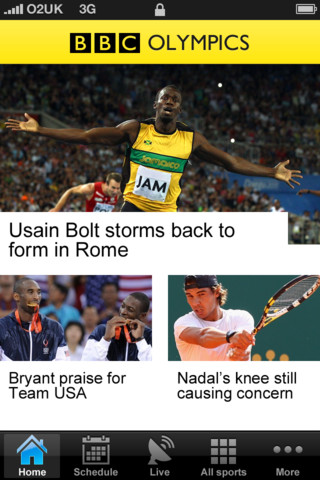
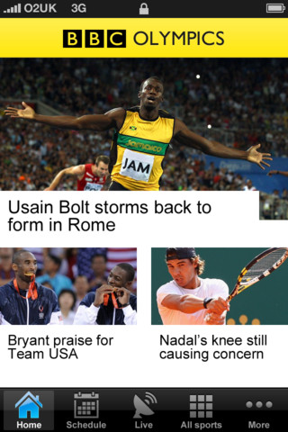
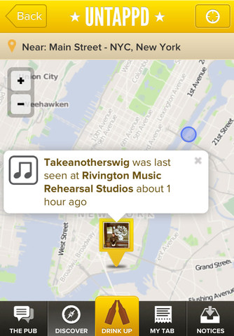
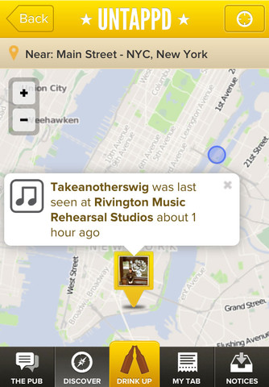

... and much much more ...
 



 

Adobe internal app
Adobe internal app

 PhoneGap Build
PhoneGap Build
 PhoneGap Debug
PhoneGap Debug
 PhoneGap
Emulate
PhoneGap
Emulate

*** Subject To Change ***
*** Subject To Change ***
Review of current APIs and replace with WebView impl
*** Subject To Change ***
Polyfill missing pieces on different platforms